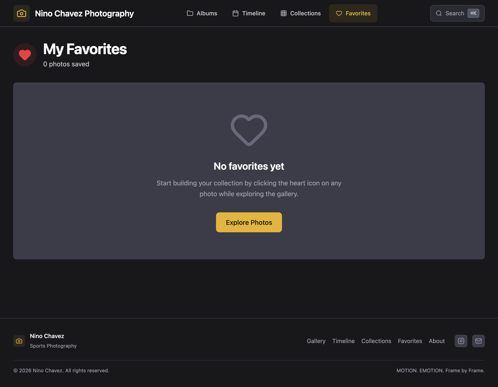

The find-my-photos journey · Deliver
Take your moments.
Heart the photos that are yours, then take them — one photo, a copy-link, or the whole selection as a ZIP. Free, no sales, no gate.

Shipped surface — live at ninochavez.co/photography/favorites. Per-photo download + copy-link, plus a batch ZIP via the album-zip Worker.